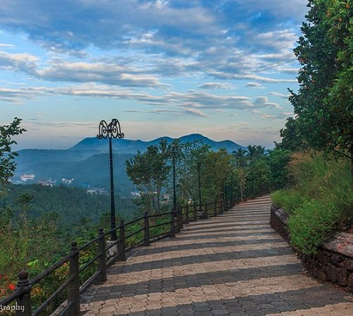

TOP ATTRACTIONS IN MALAPPURAM
NILAMBUR TEAK MUSEUM

Kerala has had a long association with teak and has always played a central role in its cultivation and trade. The word teak itself is said to have come from the Malayalam word 'theku'. The Teak Museum in Nilambur celebrates this ancient relationship and takes one on a special journey through history, chronicling teak and its importance in our culture.eak is still the most sought after form of timber. The museum was made of the sub-centre of Kerala Forest Research Institute (KFRI) in 1995.
MINI OOTY

Arimbra Hills, popularly known as the Mini Ooty is a tourist spot in Malappuram. It is an ideal place to feel the clouds and to watch sunset. Located at a height of 1050 ftabove sea level, the place attracts large number of visitors for its rolling hills and scenic views. Arimba hills also have Thiruvonamala, Poolappees, Muchikundu, Cheruppadi Mala, Kunnumpuram and Kakkadseemly for hiking. One of the mesmerizing views from these hiking spots is the runway of Kozhikode International airport.
KOTTAKUNNU PARK
Kottakkunnu, Known as Marine Drive of Malappuram is a hill garden. Kottakkunnu park contains an Open Air theater, Lalitha Kala Academy Art gallery, a water theme park, Adventure Park, Kids traffic park, Balloon Park, 16D Cinema. There is a Water fountain and Laser show every weekend and on festivals like Eid, Onam, New year eve, etc. At Kottakkunnu one can see traces of the first fort built by the Zamorins.